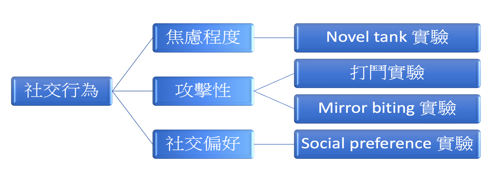

急性氨處理對成年斑馬魚社交行為上的性別差異
王詩云、葉馨筎
摘要
氨為水中常見的污染源，來自污水排放、工業廢水、農業施肥等。環境中若累積過高的氨會影響魚類的生理功能以及行為。但氨造成魚類行為改變的性別差異仍不清楚。而不同性別行為改變的差異可能會影響魚群的活動模式、繁衍與保護後代的能力等。因此本研究欲探討急性氨處理對斑馬魚不同社交行為影響中的性別差異。我們發現急性氨處理會造成公母斑馬魚的行為產生不同影響。
研究目的
探討急性氨處理是否影響公母斑馬魚的焦慮程度、攻擊性以及社交偏好，並比較公母斑馬魚的差異。
Methodology
研究成果及展望
- 正常情況下母魚較公魚焦慮程度高、攻擊性較低。
- 急性氨處理 1 小時使公魚焦慮程度和攻擊性增加，而母魚則攻擊性降低。
- 急性氨處理 4 小時後公母魚焦慮程度及攻擊性都平復至與控制組相同，推論為適應處理環境的結果。
- 急性氨處理對公母斑馬魚的社交偏好皆不影響。
從我們的研究中可以發現，急性氨處理確實會對斑馬魚的焦慮和攻擊行為造成影響，並存在性別上的差異。藉由這些易觀察的行為實驗，對氨的毒性、魚類的性別差異，有更深的認識。未來更希望能藉由我們的實驗結果，進一步探討過程中生理層面可能產生的變化。